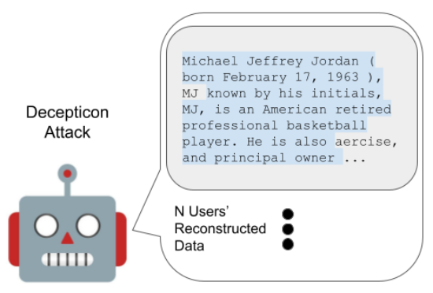
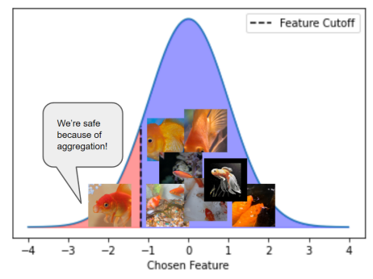
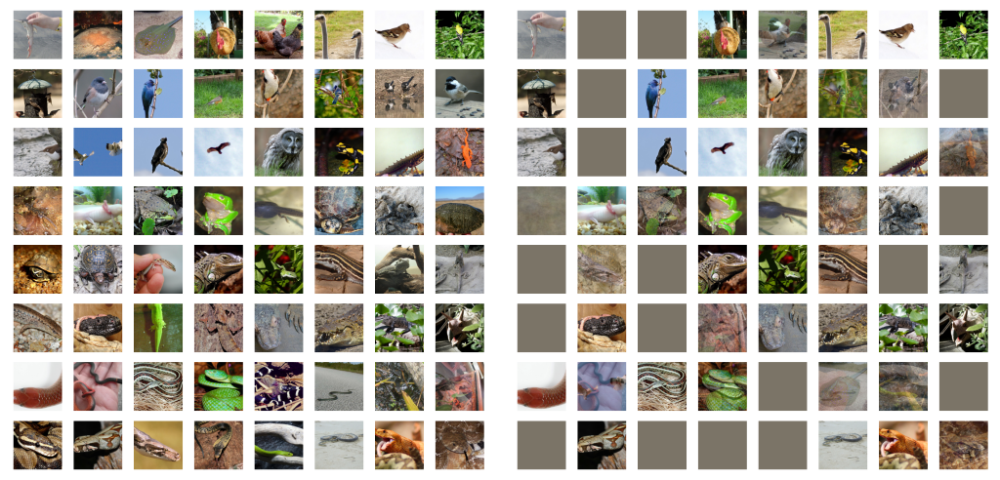
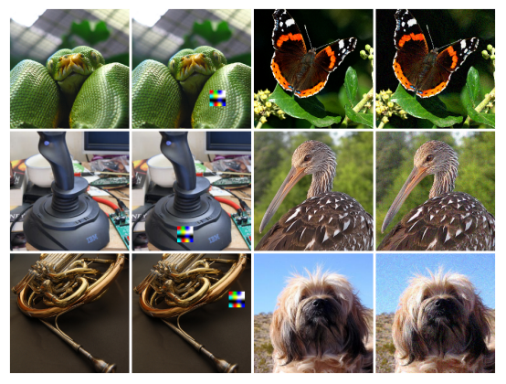
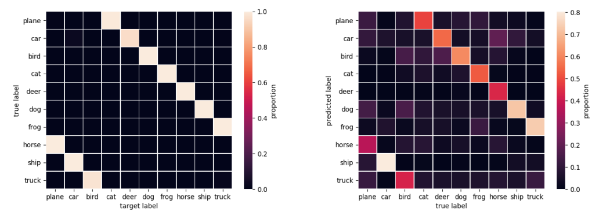
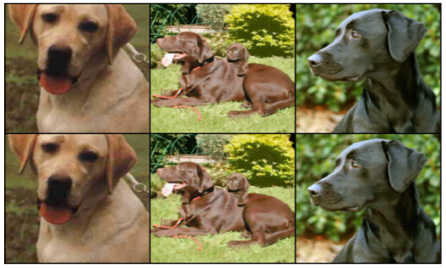
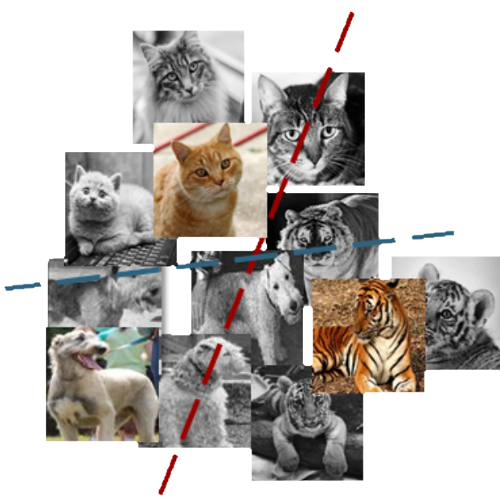
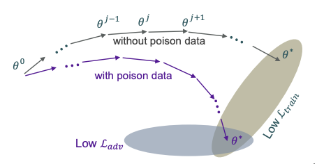
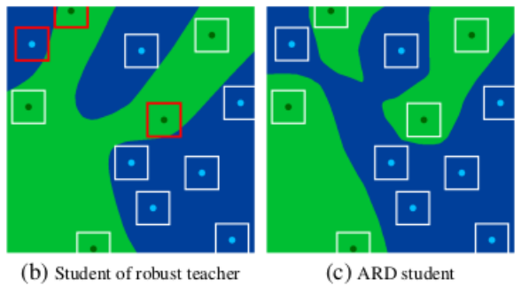

Hello! I am a PhD candidate in Mathematics at the University of Maryland co-advised by Professor Tom Goldstein (CS) and Professor Wojtek Czaja (Math). My research has primarily focused on robustness and security for deep learning models. Specifically, my research has focused on adversarial robustness, data poisoning attacks on deep networks, and, more recently, privacy attacks against both language and vision models trained in a federated learning setting.
|  |
Decepticons: Corrupted Transformers Breach Privacy in Federated Learning for Language Models.
Preprint 2022
Liam Fowl*, Jonas Geiping*, Steven Reich, Yuxin Wen, Wojtek Czaja, Micah Goldblum, Tom Goldstein.
|
|  |
Yuxin Wen*, Jonas Geiping*, Liam Fowl*, Micah Goldblum, Tom Goldstein.
|
|  |
Robbing the Fed: Directly Obtaining Private Data in Federated Learning with Modified Models.
ICLR 2022 (accepted for publication)
Liam Fowl*, Jonas Geiping*, Wojtek Czaja, Micah Goldblum, Tom Goldstein.
|
|  |
Sleeper Agent: Scalable Hidden Trigger Backdoors for Neural Networks Trained from Scratch.
Preprint 2021
Hossein Souri*, Liam Fowl*, Rama Chellappa, Micah Goldblum, Tom Goldstein.
|
|  |
Adversarial Examples Make Strong Poisons.
NeurIPS 2021
Liam Fowl*, Micah Goldblum*, Ping-yeh Chiang*, Jonas Geiping, Wojtek Czaja, Tom Goldstein.
|
|  |
Jonas Geiping*, Liam Fowl*, Ronny Huang, Wojtek Czaja, Gavin Taylor, Tom Goldstein.
|
|  |
Micah Goldblum*, Liam Fowl*, Tom Goldstein.
|
|  |
Ronny Huang*, Jonas Geiping*, Liam Fowl, Gavin Taylor, Tom Goldstein.
|
|  |
Adversarially Robust Distillation.
AAAI 2020
Micah Goldblum*, Liam Fowl*, Soheil Feizi, Tom Goldstein.
|